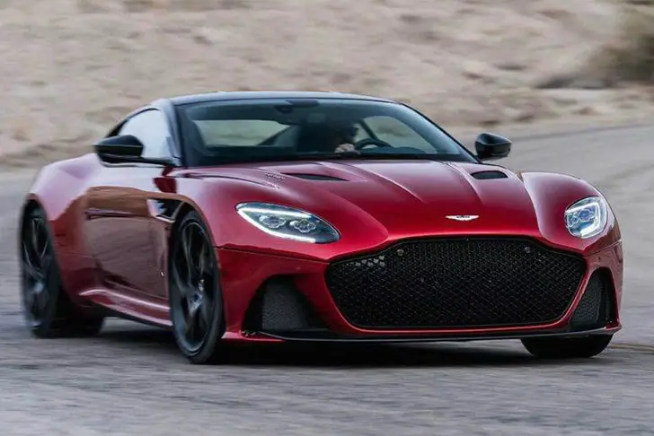
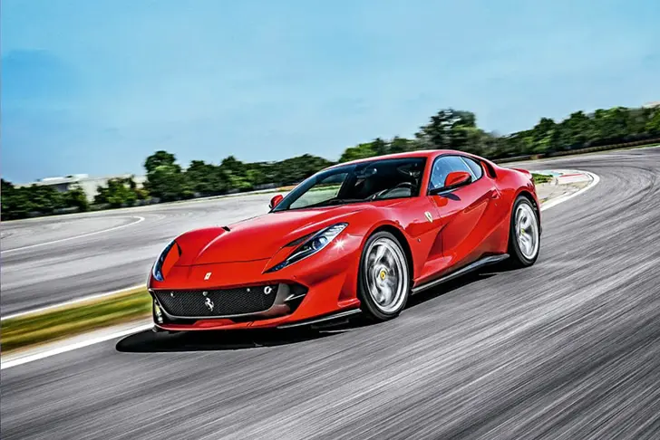
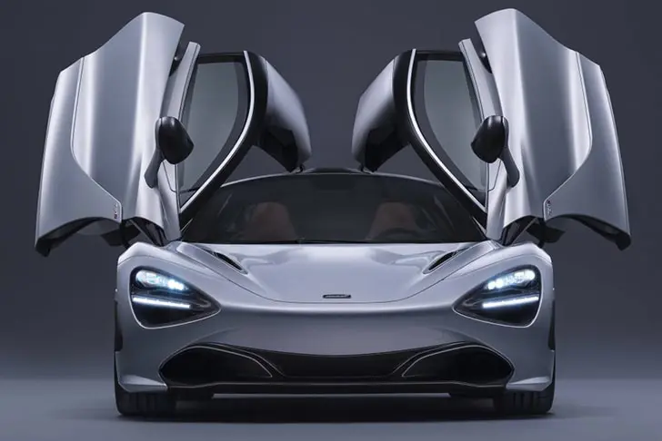
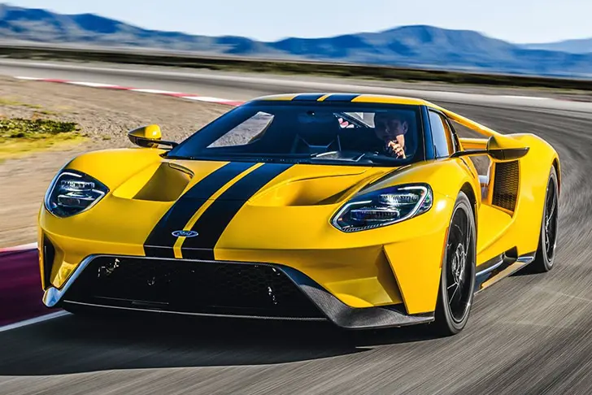
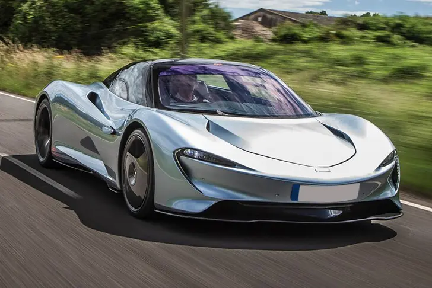
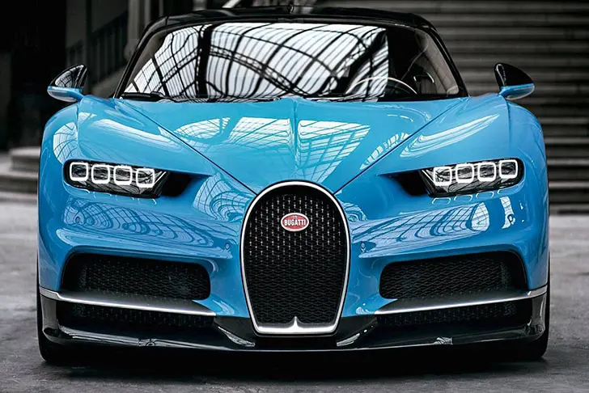
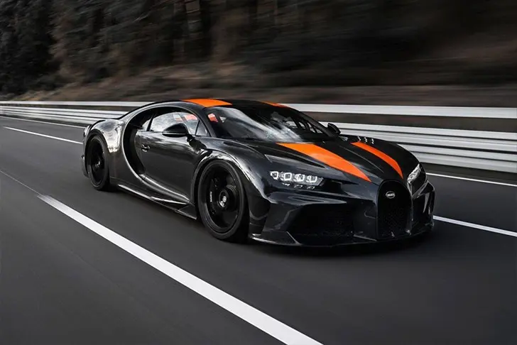
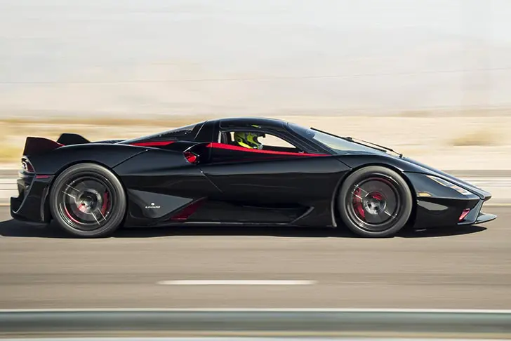

Top 10 de Hoje: Carros Mais Rápidos do Mundo
Eu sou um grande fã do mundo automobilistico e posso dizer que essa lista está me dando arrepios. As coisas mudaram com o tempo. Quanto mais ele passa, mais radicais ficam essas máquinas. O primeiro colocado me deixou em shock.
Conheça agora a lista dos 10 carros mais rápidos do Mundo:
10° - Aston Martin DBS Superleggera 2020
Com um motor V12 biturbo, capaz de gerar 725 cavalos de potência e cuja capacidade é de 5,2 litros, o modelo inglês consegue chegar a 340 km/h. Vale destacar também o câmbio de transmissão automática e oito velocidades.
Apenas 3,4 segundos são suficientes para que o superesportivo chegue a 100 km/h. O valor dele, em reais, é de aproximadamente 1,6 milhão.
9º - Ferrari 812 Superfast 2020
A tradicional marca italiana cobra, no mínimo, 335,375 dólares (aproximadamente 1,7 milhão de reais) de quem quiser adquirir o modelo que possui motor V12 de 800 cv de potência
Em 2,9 segundos, o carro atinge 100 km/h. A velocidade máxima do veículo é de 340 km/h.
8° - McLaren 720S 2020
Quem não se lembra do épico McLaren Senna, inspirado no maior piloto da história do automobilismo mundial? Pois bem, este modelo da montadora britânica foi usado como base para a criação do carro batizado com o sobrenome do brasileiro.
O motor, no entanto, não tem a mesma potência do modelo em homenagem a Senna. O v8 turbo, com câmbio automatizado de sete velocidades, gera 720 cv de potência.
O carro custa cerca de 1,5 milhão de reais e atinge 341 km/h.
7° - Ford GT 2020
A marca que anunciou recentemente a saída do Brasil possui o modelo listado de menor motor entre os que aparecem na lista: V6 biturbo de 3,5L. O tamanho, porém, não significa necessariamente menor desempenho.
O veículo alcança 347 km/h de velocidade máxima.
6º - Lamborghini Aventador SVJ
Histórica concorrente da Ferrari, a Lamborghini não ficaria de fora da lista. Seu representante, o Aventador SVJ, chega a 349 km/h. Tal desempenho é possível graças ao motor V12 aspirado, ao propulsor de 6,5 litros, aos 769 cv de potência e ao câmbio automático de sete velocidades.
5º - McLaren Speedtail 2021
O início do Top-5 coincide também com a inauguração de uma nova marca no ranking: a dos carros que chegam a 400 km/h (ou mais). É o caso do modelo da McLaren, detentor de um motor V8 Twin-Turbo 4.0 com impressionantes 1050 cavalos de potência.
Em 12,8 segundos, o carro atinge 300 km/h, sendo que sua velocidade máxima é de 403 km/h.
4º - Bugatti Chiron 2020
Com preço de aproximadamente três milhões de dólares, o primeiro integrante da Bugatti no ranking possui motor W16 quadriturbo de oito litros e esmagadores 1500 cv de potência.
Isso faz com que seja possível ir de 0 a 100 km/h em dois segundos e meio, e chegar a 420 km/h de velocidade máxima.
3º - Bugatti Chiron Super Sport 300+
O segundo integrante da Bugatti na lista dos dez carros mais rápidos do mundo também tem motor W16 quadriturbo, porém com potência ainda maior: 1578 cavalos.
Alterações na aerodinâmica e no câmbio do veículo fizeram com que sua velocidade máxima seja de 440 km/h para os compradores que desejam adquiri-lo.
2º - Koenigsegg Agera RS
Com medição feita pela Racelogic, o modelo sueco era, até janeiro de 2021, com seus 447,1 km/h, o carro mais rápido do mundo. Um resultado absolutamente incrível para um veículo lançado em 2015.
O motor V8 biturbo de cinco litros, juntamente com os 1160 cavalos de potência, ajudaram o piloto Niklas Lilja a conquistar a expressiva velocidade máxima mencionada anteriormente.
1º - SSC Tuatara
Enfim, o carro mais rápido do mundo. 1750 cavalos de potência; motor V8 Biturbo de 5,9 litros; coeficiente aerodinâmico de 0,29.
Essas especificações proporcionaram ao Tuatara, depois de três tentativas, a tão ambicionada conquista. Sua velocidade chegou a 454,8 km/h.
O recorde do SSC Tuatara não deve demorar muito tempo para ser superado. Pelo menos é o que ambiciona a Hennessey Performance Engineering, montadora com sede nos Estados Unidos.